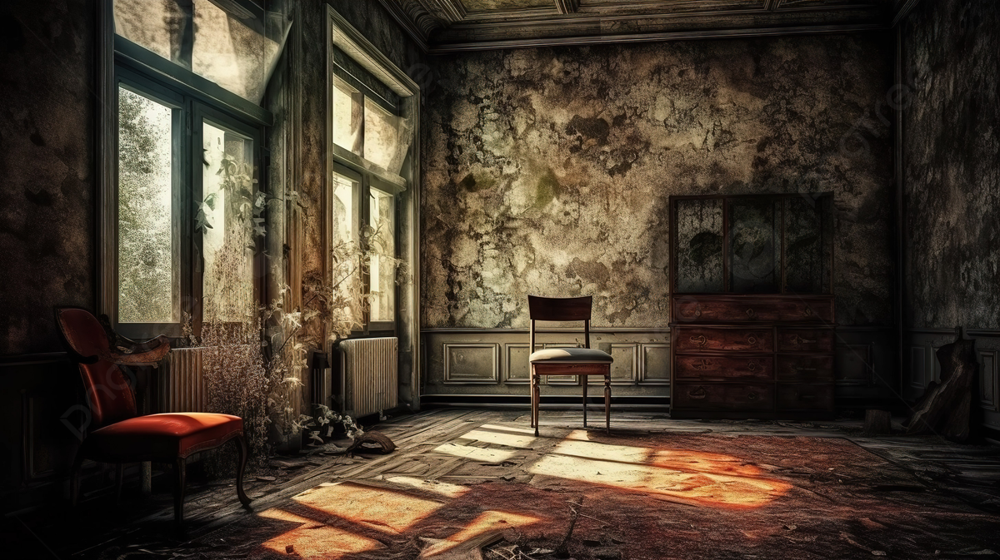

.jpg)
Why Restore Furniture?
Restoring furniture not only preserves its beauty and functionality but also extends its lifespan and adds character to your home.
Tips for Furniture Restoration
- Clean the surface: Start by wiping down the furniture with a damp cloth to remove dirt and dust.
- Assess the condition: Look for cracks, loose joints, or damaged finishes before starting any work.
- Use gentle cleaning agents: Avoid harsh chemicals that can damage wood or upholstery.
- Sand carefully: Use fine-grit sandpaper to smooth surfaces and remove old finishes.
- Apply appropriate finishes: Use stains, varnishes, or paints suitable for the material and style.
Tricks for Furniture Care
Enhance your restoration efforts with these tricks:
- Use wood filler for minor cracks and scratches before refinishing.
- Mix vinegar and olive oil for a natural wood polish.
- Protect your furniture with coasters, mats, or covers to prevent future damage.
- Test finishes on a small area before applying them to the entire piece.
